L31 - Classification and Tracking#
Classification and Tracking
Read four targets’ micro-Doppler on your kit, then classify recorded targets and track a walker in range and angle.
Lesson 31 · Antennas, Phased Arrays, and Radar Systems · Dr. Neil Rogers
Printing
To print the slides, switch to present mode and print: one slide a sheet, with room for notes. Print from read mode for the whole lesson.
Learning Objectives
- I can integrate FMCW radar processing with a phased-array front-end to track a moving target.
- I can classify a detected target from its micro-Doppler signature and report the classifier's accuracy.
By the end of the L30 Lab the radar produces a list of detections, each a range, a radial velocity, and an SNR. A detection says that something is there and how fast it is closing. It does not say what the target is, and one detection per frame does not say where the target is going. This page adds the last two stages of the chain your final project report explains. The lesson comes first, and you read it before the lab: it classifies a detected target from its micro-Doppler signature, which Lesson 26 introduced, measures how often the classifier is right, and then joins the detections into a track in range, with an alpha-beta filter, and in angle, with the monopulse comparison of the L24 Lab. Its last frame, the Pre-Lab, lists the predictions you make before the lab. The lab follows it on this page.
An Example Burst
The lesson works each method on an example burst, not the lab’s preset, and on example targets, not the lab’s records:
Example burst |
Value |
|---|---|
carrier, wavelength |
10.0 GHz, \(\lambda = 3.0\ \text{cm}\) |
chirp |
400 MHz in \(300\ \mu\text{s}\), one every 0.4 ms |
frame |
256 chirps, 102.4 ms |
range bin |
\(c/2B = 0.375\ \text{m}\) |
Work your own Part 1 values at the lab’s preset, which the lab’s Big Picture names.
Micro-Doppler of a Moving Part
A rotor’s tips set the edge of its band, \(\pm v_\text{tip}\).
A walker’s torso sets a line off zero, and its limbs swing about it once a stride.
Lesson 26 derived the Doppler shift of a rigid target, \(f_D = 2v_r/\lambda\). A real target is rarely rigid. Its body moves at one radial speed, and its parts move about the body at speeds of their own, so each part’s echo carries the body’s Doppler plus a shift from its own motion. The extra shifts are the micro-Doppler, and they change in time with the motion that causes them.
A point on a rotor at radius \(\rho\), turning at \(\Omega\) radians per second and seen edge-on, swings toward and away from the radar along the line of sight, so its radial speed is \(\Omega\rho\sin(\Omega t)\) and its Doppler swings sinusoidally between \(\pm 2\Omega\rho/\lambda\). Every point along a blade does this at its own radius, so a blade fills the band from zero out to its tip. The tips move fastest. For a 25 cm fan at 700 rpm,
which is \(\pm 2(9.2)/0.030 = \pm 611\ \text{Hz}\) at 10.0 GHz. A rotor held at a tilt \(\psi\) off edge-on moves only \(\cos\psi\) of that along the line of sight, so the same fan turned 40° shows tips at \(9.2\cos 40^\circ = 7.0\ \text{m/s}\).
A walker’s arms and legs swing forward and back about the torso, once a stride, like pendulums. A walker closing at 1.1 m/s whose limbs swing 2.3 m/s about the torso puts the torso at 73 Hz, and the limbs reach \(1.1 + 2.3 = 3.4\ \text{m/s}\), or 227 Hz, on the forward stroke, and \(1.1 - 2.3 = -1.2\ \text{m/s}\) on the back stroke. The body’s Doppler says how fast the target is moving. The micro-Doppler says what is moving, which is the property a classifier needs.
Four Signatures
The walker shows a torso line off zero, and its limbs swing once a stride.
The fan shows a steady band out to its tips.
The spinner’s band piles up in horns near its tips.
The hand shows one trace swinging through zero.

The L31 Lab reads four kinds of target: you walking, a desk fan, a fidget spinner, and your hand waving. The figure simulates the lesson’s example of each on the example burst, one range bin sampled once per chirp, with the spectrogram the next frames build. Each panel has its own span, and the right-hand axis reads the same scale in m/s, the unit of the app’s view.
The walker is the only target that goes anywhere, so it is the only one whose pattern sits off zero: the torso is the steady line at 73 Hz and the limbs trace arcs above and below it, once a stride. The fan stays put, so its band is centered on zero, and it is steady, because the blades pass too often for any one of them to appear. The spinner, 6 cm across at 1500 rpm, is a smaller rotor, with tips at \(\pi(0.06)(25) = 4.7\ \text{m/s}\), or 314 Hz. Its weight sits in three lobes near the rim rather than along a blade, and a point moving sinusoidally spends most of its time near its extremes, so its band piles up in two horns near the tip speed instead of filling evenly. The hand is one scatterer moving back and forth. A wave 0.15 m each way at 1.2 Hz peaks at \(2\pi(1.2)(0.15) = 1.1\ \text{m/s}\), or 75 Hz, and the trace crosses zero twice a cycle, so the hand has no average Doppler at all.
In the app’s Range-Doppler view the same targets appear at their ranges, across velocity: watched for a few seconds, each one’s band spans the speeds its parts reach, and the walker’s sits off zero.
One Range Bin in Slow Time
One sample per chirp: 2.5 kHz on the example burst, so ±1.25 kHz, or ±18.75 m/s.
A part faster than that aliases.
A walker crosses a 0.375 m bin in 0.34 s: sum the bins around it.
Lesson 29 forms the range-Doppler map with an FFT across the chirps of a burst, one FFT for each range bin. That FFT runs in slow time: one sample per chirp, from the same range bin of each chirp’s range profile. A spectrogram is the same FFT taken over short, overlapping pieces of a longer recording instead of over one whole burst, so each column of the spectrogram is a Doppler spectrum of a few tens of milliseconds of the target.
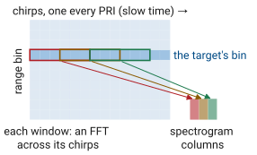
The slow-time samples arrive at the PRI, 0.4 ms on the example burst, so the sample rate is 2.5 kHz and the spectrogram covers ±1.25 kHz, the ±18.75 m/s that L29 calls \(v_\text{max}\). A part faster than that aliases, as in L26, and wraps to the wrong Doppler. A 30 cm fan with tips at 18.8 m/s sits just past that edge and its tips wrap. A CW radar samples its Doppler tone directly, hundreds of kHz instead of once a PRI, so the same tips do not wrap there.
Two more details make the spectrogram show the target and nothing else.
Stationary returns, the walls and the fan’s own stand, sit at
0 Hz and are far stronger than the parts that move; subtracting the
mean of the slow-time samples removes them, which is what MTI does at
0 Hz. And a target that moves in range leaves its bin: at
1.1 m/s the example walker crosses a 0.375 m bin in
0.34 s, so the spectrogram of one bin shows the walker in pieces.
The provided spectrogram therefore sums the few bins around the detection’s
range, which the L30 detection list supplies. You run it and tune its window;
you do not write it.
Window Length
The example walker’s limbs accelerate at \(13.0\ \text{m/s}^2\), so 64 chirps, 25.6 ms, is the nearest power of two.
A fan’s tips change too fast for any window to follow, so its band looks steady.
Every spectrogram trades resolution in frequency against resolution in time. A window of length \(T_w\) resolves Doppler shifts \(\Delta f = 1/T_w\) apart, the \(\Delta f = 1/T\) of L26, so a long window resolves finely. But a limb’s Doppler does not hold still during the window. If it changes at a rate \(\dot f_D\), it moves by \(\delta f = \dot f_D T_w\) while the window is open, and the column smears that far. A Doppler rate comes from an acceleration \(a\) along the line of sight, \(\dot f_D = 2a/\lambda\), by differentiating \(f_D = 2v/\lambda\).
The resolution improves as the window grows and the smear worsens, so the best window makes the two equal, \(1/T_w = \dot f_D T_w\), which gives \(T_w = 1/\sqrt{\dot f_D}\). The example walker swings its limbs 2.3 m/s about the torso, 0.9 times a second, so their peak acceleration is \(2\pi(0.9)(2.3) = 13.0\ \text{m/s}^2\) and
about 85 chirps of the example burst. Windows come in powers of two:
Window |
\(T_w\) |
Resolution \(1/T_w\) |
Limb smear \(\dot f_D T_w\) |
|---|---|---|---|
16 chirps |
6.4 ms |
156 Hz |
6 Hz |
64 chirps |
25.6 ms |
39 Hz |
22 Hz |
128 chirps |
51.2 ms |
20 Hz |
44 Hz |
256 chirps |
102.4 ms |
9.8 Hz |
89 Hz |
Sixty-four chirps keeps the two closest, and it resolves 0.59 m/s.
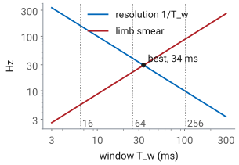
A measured line is wider than \(1/T_w\). The Hann window that spectrogram
applies widens a line’s main lobe to 1.44 bins at its 3 dB points, the
widening Lesson 28 gives for a line in range,
and a part that moves during the window widens it further, so expect a line
about \(1.44/T_w\) wide or more. Sixteen chirps follows the limbs but resolves only
156 Hz; 256 chirps resolves finely but smears the limbs across
89 Hz. The torso, which hardly accelerates, is sharpest in the
longest window. The table changes with the PRI, so the lab’s own windows have
their own numbers.
A fan’s tips change their Doppler far faster than any window can follow, so a fan’s band shows steady, averaged over many blade passes, and a very short window shows each blade’s flash instead.
Window Explorer
The widget computes the spectrogram of the chosen example target on the example burst for a window of 8 to 512 chirps; the readout gives the window in chirps and milliseconds and the resolution \(1/T_w\), and the red bar at the top right is the window’s length on the time axis. It opens on the walker at 64 chirps. Lengthen the window and the torso line sharpens while the limb arcs blur along time; shorten it and the limbs follow their swing while every line thickens in Doppler. Then pick the fan and shorten the window to 16 chirps: the band breaks into the blades’ flashes, 70 a second, since each of the three blades lies across the line of sight twice a turn at 700 rpm.
Three Features
The centroid is the body’s radial speed.
The spread is how fast its parts move about it.
The periodicity is how strongly the pattern repeats at the pace of a stride or a wave.
A classifier does not look at a picture; it compares numbers. A feature is one number computed from the spectrogram that takes different values for different classes of target, and three are enough to separate most of the lab’s four kinds of target. Each measures a different physical property, which is why they separate targets that any one of them alone would confuse.
The provided features returns all three, in m/s for the first two, after
ignoring each column’s bins more than 15 dB below its peak so the
noise floor does not count as motion. The centroid is the power-weighted
mean Doppler, converted to speed: the body’s radial speed, near zero for a
target that stays put. The spread is the power-weighted width of each
column about that mean: how fast the parts move relative to the body. The
periodicity asks whether the pattern repeats every 0.25 to
2 s, as a stride or a wave does: a walker or a waving hand scores
near 0.8, and a steady rotor scores low, about 0.2.
The features are a list of numbers, one row per record, and the classifier
compares the rows. Adding a feature is one more number on the end of that
list: the lab’s task (b) appends one with a single np.append line in the
notebook’s my_features, and the classifier uses it with no other change.
Nearest-Centroid Classifier
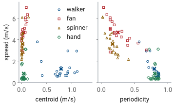
Training stores each class’s mean.
A trial takes the nearest mean’s class.
A nearest-centroid classifier is the simplest one that learns from data. We record a set of training trials of each target, compute the three features of each, and keep each class’s mean, the crosses in the figure. A new trial gets the class whose mean is nearest. The features have different units, so the classifier first scales each one to a common size; without that, the feature with the largest numbers would decide every distance.
The figure plots 20 simulated training trials of each example target on the example burst: walkers at speeds from 0.7 to 1.5 m/s and up to 60° off the line of sight, 25 cm fans from 450 to 850 rpm, 6 cm spinners from 900 to 2000 rpm, waves of different sizes and rates, and an SNR of 3 to 15 dB a chirp. The walkers are the only class well off zero in centroid, with a mean of 0.78 m/s. Most hands have the least spread among the others, under 1 m/s, though a few slow, large waves reach into the rotors’ range, and the right panel shows what sets the hands apart: periodicity. The fans and spinners share zero centroid and low periodicity, so only their spread separates them, a mean of 4.7 against 3.6 m/s, and the two clouds overlap: a fast spinner looks like a slow fan.
The Confusion Matrix
true \ called |
walker |
fan |
spinner |
hand |
|---|---|---|---|---|
walker |
20 |
0 |
0 |
0 |
fan |
0 |
16 |
2 |
2 |
spinner |
0 |
12 |
8 |
0 |
hand |
0 |
0 |
0 |
20 |
Accuracy on unseen trials is \(64/80 = 80\%\).
Fourteen of the 16 errors mistake one rotor for the other.
The confusion matrix counts, for each true class (a row), how many trials the classifier called each class (a column). The diagonal holds the correct calls, and every count off the diagonal is a specific mistake. Its accuracy is the diagonal’s total over all trials,
The trials in the matrix are a second set of 20 per class, drawn the same way as the training set but not used to train. A classifier scored on its own training trials has already seen the answers, and its accuracy overstates what it will do on a target it has not seen. The lab scores each record with a classifier trained on all the others, leave-one-out, which keeps that rule when there are only a few records of each class.
The matrix says more than the accuracy does. Fourteen of the 16 errors are a fan called a spinner or a spinner called a fan, the overlap the previous figure showed, and the other two are slow fans whose small spread falls nearer the hands’ mean. Walkers and hands are never wrong. An 80% classifier that never misses a person is a different instrument from one that misses people 20% of the time, and only the matrix tells them apart. It also says what to improve: a feature that separates the two rotors would address most of the errors. Finally, the number is an estimate. Five different draws of 80 test trials score between 80% and 84%, so with 20 trials a class report the counts, not only the percentage.
The Band’s Edge and Shape
The edge is the tip speed; a tilt or a rate scales it.
The shape, spread over edge, says where the weight sits.
Two more features can separate the rotors. The edge is the speed at the outside of each column’s band, the bins within 15 dB of the column’s peak, averaged over the record: for a rotor it is the tip speed along the line of sight, \(v_\text{tip}\cos\psi\). The spread measures the same motion in a different way, as an RMS. Both grow with the rate and both shrink with the tilt, so a fast spinner and a slow or tilted fan can share either one.
Their ratio does not. Every point on a rotor moves at \(v_\text{tip}(\rho/R)\sin\Omega t\) along the line of sight, so its RMS speed over a turn and over the points is the first line above. The mean of \(\sin^2\) over a turn is \(\tfrac12\). The mean of \((\rho/R)^2\) depends only on where along the radius the weight sits. For a blade whose weight is spread evenly over its outer third, from \(\rho = 2R/3\) to \(R\),
A tilt or a rate scales every speed in the band by the same factor, so the shape, the spread over the edge, is the same at any tilt and any rate: it measures where the weight sits, not how fast it moves. A rotor whose weight sits farther out has a larger shape.
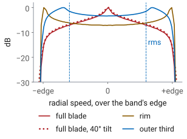
The figure normalizes each held spectrum to its own edge. The tilted blade lands on the untilted one, because a tilt scales every speed by the same \(\cos\psi\); the rim and the outer third differ from the full blade because their weight sits elsewhere. The notebook’s task (b) adds the edge and then the shape to the three features and compares the matrices.
The Alpha-Beta Filter
Each frame: predict where the target should be, compare with the detection, correct.
\(\alpha\) sets how much a new detection moves the track.
On a missed frame, the track only predicts.
A detection list is noisy. Each range is the center of a range bin, a walker’s body is larger than a bin, some frames miss the target, and nothing in the list says that the detection at 3.1 m in one frame is the same person as the one at 3.4 m in the next. A track joins the detections of one target into a single estimate of its range and velocity, frame after frame. A military radar calls a person on foot a dismount; tracking one is the second half of the L31 Lab.
The alpha-beta filter is the simplest tracker, and the provided
alpha_beta runs it. Each frame it predicts where the target should be,
assuming it kept its velocity over one frame, compares that prediction with
the frame’s detection, and corrects the range and the velocity by fixed
fractions of the difference, the residual. The gain \(\alpha\) sets how far
a new detection moves the range, and \(\beta\) how far it moves the velocity. A
frame with no detection near the prediction keeps the prediction, which is
how a track coasts through a miss, and accepting only the detection nearest
the prediction is how two targets keep separate tracks. On the example burst
one frame is \(\Delta t = 102.4\ \text{ms}\).
Choosing Alpha and Beta
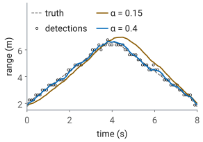
The two gains set how much weight the track gives a new detection. A large \(\alpha\) follows each detection closely, noise and all; a small one averages over many frames and smooths the noise, but it is slow to notice a change in velocity, so it lags a target that turns. The usual choice ties the two gains together, \(\beta = \alpha^2/(2-\alpha)\), the Benedict-Bordner choice, which balances the track’s noise against its lag and leaves one number to choose.
The other two lines say what that number trades. For detection noise \(\sigma_z\) that is independent from frame to frame, the track’s settled RMS error is \(\sigma_\text{track}\), the second line. Under a steady acceleration \(a\) the track trails the target by the third line. The target gains \(a\Delta t\) of speed each frame, and once the track settles its velocity must gain the same, so the velocity correction \((\beta/\Delta t)e\) equals \(a\Delta t\) and the residual is \(e = a\Delta t^2/\beta\). Work both for \(\alpha = 0.4\) on the example burst:
A walker who turns by swinging from +1.2 to −1.2 m/s over 1 s, as a cosine, has a peak acceleration of \(\pi(1.2) = 3.8\ \text{m/s}^2\), so the settled lag would be
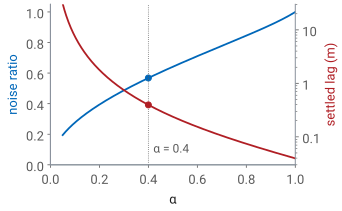
A small \(\alpha\) gives a low noise ratio and a long lag, and a large one the reverse; the choice depends on how much the target maneuvers.
The figure simulates that walk on the example burst: out from 2 m at 1.2 m/s, the one-second turn, and back. The detections are the centers of the 0.375 m bins the walker falls in, with 0.12 m of body jitter, 0.15 m RMS from the truth in all, and 5 of the 79 frames missed. With \(\alpha = 0.4\) the track holds 0.12 m RMS on the straights, better than the detections, and is off by at most 0.23 m at the turn, less than the settled 0.40, because the turn ends before the lag builds up. With \(\alpha = 0.15\) the track is smoother, but it trails the turn by up to 0.9 m and is still catching up on the way back. The track’s velocity is a second check: it should agree with the Doppler velocity of the detections it accepts.
Angle by Monopulse
Two subarray channels \(D = 56\ \text{mm}\) apart give the angle in one look, with no sweep.
Unambiguous within ±15.5° of broadside at 10.0 GHz.
Read in the detection’s range-Doppler cell.
Range comes from the FMCW processing; angle comes from the array. Lesson 19 found a bearing by sweeping the beam across the field and taking the peak, one sweep at a time. The L24 Lab measured it in one look with monopulse, comparing the two subarray channels, and that is the method a tracker needs.
The two subarrays’ centers sit four elements, \(D = 56\ \text{mm}\), apart. A wave from angle \(\theta\) reaches one center a path \(D\sin\theta\) before the other, so the two channels differ in phase by
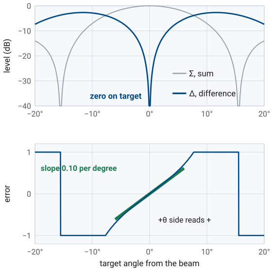
672° per unit of \(\sin\theta\) at 10.0 GHz, and the second line turns a measured phase back into an angle. A phase is known only within ±180°, so the angle is unambiguous while \(\sin\theta\) stays within \(\lambda/(2D) = 0.268\) of the steer direction’s \(\sin\theta_0\), which is ±15.5° at broadside and a little more in angle when the beam is steered.
In the radar we take the two channels’ values in the range bin where CFAR declared the target. That bin holds the target’s echo with the 256-chirp integration gain of L27, and none of the clutter at other ranges, which would pull the angle toward itself. So the lab saves both subarray channels. Which side of broadside reads a positive angle depends on the order of the kit’s channels, so the lab checks it once, with a person on a mark to one side.
A Walker on a Diagonal
A diagonal walk changes the range and the angle together.
Its radial speed is the part of the walk along the line of sight.
Put the array at the origin, \(y\) straight out along boresight and \(x\) to the side, positive on the E8 side. A point on the floor at \((x, y)\) sits at the range and angle of the first line. A walker moving at speed \(v\) in the direction of the unit vector \(\hat{\mathbf u}\) closes at the radial speed of the second line, where \(\hat{\mathbf r}\) is the unit vector from the array to the walker; the minus sign makes a closing walker positive, as on every page of this module.
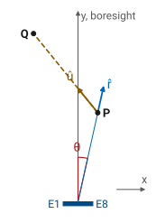
Work it for a walker who starts at \(P\), 0.4 m to the E8 side and 1.8 m out, and walks at 1.2 m/s toward \(Q\), 0.9 m to the E1 side and 3.4 m out:
At \(P\) the walker opens at 0.75 m/s, less than its 1.2 m/s pace, because part of the walk runs across the line of sight. At \(Q\), 3.52 m out and −14.8°, the walk lines up more nearly with the line of sight and the walker opens at 1.09 m/s. A walker who turns and walks back has the same radial speeds with the sign reversed, and at the turn itself the speed, and with it the radial speed, passes through zero. That is the moment the 2-pulse canceller cuts the torso, and the moment the filter’s predict step carries the track.
A walker moving exactly across the line of sight has \(v_r = v\cos 90^\circ = 0\) (L26), so the torso’s echo sits at 0 Hz and MTI removes it. A diagonal path keeps the Doppler from vanishing except at the turn.
Why Monopulse Holds a Walker

A walker crossing 4 m away at 1 m/s changes bearing by about 14° a second, so a beam sweep about a second long lets the walker leave the 13.6° beam between one look and the next. Monopulse measures once a frame, and in the example burst’s 102.4 ms the walker moves 1.5°, well inside the monopulse window, so the angle track keeps up.
Summary
Symbol / idea |
What it is |
On the example burst |
|---|---|---|
\(f_D = 2(v_\text{body} + v_\text{part})/\lambda\) |
micro-Doppler of a moving part |
25 cm fan at 700 rpm: tips 9.2 m/s, ±611 Hz |
slow time |
one sample per chirp |
2.5 kHz: ±1.25 kHz, ±18.75 m/s |
\(\Delta f = 1/T_w\), \(\delta f = \dot f_D T_w\) |
window: resolution against smear |
best \(T_w = 1/\sqrt{\dot f_D}\); 64 chirps for the example walker |
centroid, spread, periodicity |
three features |
body speed, parts’ speed, repetition at 0.25-2 s |
edge, shape |
the band’s outside, and spread over edge |
weight on the outer third: shape 0.59 |
nearest centroid |
the class whose mean is nearest, in scaled features |
train and test on different trials |
confusion matrix |
true class against the call |
\(64/80 = 80\%\); most errors confuse the two rotors |
alpha-beta |
predict, residual, correct |
\(\alpha = 0.4\): \(\beta = 0.100\), noise 0.57, lag 0.40 m |
monopulse |
\(\Delta\phi = 2\pi D\sin\theta/\lambda\) |
\(D = 56\ \text{mm}\); ±15.5° at broadside |
a diagonal walk |
\(v_r = -v\ \hat{\mathbf u}\cdot\hat{\mathbf r}\) |
−0.75 m/s at \(P\) |
Pre-Lab
Part 1 of the L31 Lab packet is the pre-lab: the shaded Predicted cells of Tables A to E, each beside the Measured cell you fill in during the lab. Do it before the lab, at the lab’s preset and the givens the packet lists, and bring it with you: you check every reading against the prediction next to it.
Predicted cells |
You predict |
Checked in |
Method |
|---|---|---|---|
Table A |
each target’s largest speed on each side of 0 m/s, and whether its band is centered |
Table A; Steps 5 to 8 |
“Micro-Doppler of a Moving Part,” “Four Signatures” |
Table B |
each tape mark’s range and angle, the walker’s range near A both ways and at the turn, its radial speed near A both ways, and the angle at B |
Table B; Steps 9, 10, and 13 |
“A Walker on a Diagonal,” “Angle by Monopulse” |
Table C |
the resolution of each spectrogram window |
Table C; Step 14 |
“Window Length” |
Table D |
the shape of a fan’s band and of a spinner’s |
Table D; Step 15 |
“The Band’s Edge and Shape” |
Table E |
the noise ratio and the settled lag of each \(\alpha\) |
Table E; Step 16 |
“Choosing Alpha and Beta” |
Part 1 also asks you to attach your work for one row of each table, on your own paper.
The Big Picture
Steps |
Set |
Read |
|---|---|---|
5-8 |
four targets |
largest speeds |
9-11, 13 |
walk A-B-A; sway on B |
range, radial speed, angle |
14 |
window 64, 16, 256 |
line widths |
15 |
features, + edge, + shape |
confusion matrix |
16 |
\(\alpha\) 0.5, 0.2, 0.8 |
track errors |
The L31 Lab is the last stage of the chain your
final project report explains, in four parts.
Bring Up the Kit (Steps 1 to 4) sets the Phaser app to its Range + Velocity
preset. Four Targets (Steps 5 to 8) reads the micro-Doppler of a fan, a
fidget spinner, your hand, and you walking in the Range-Doppler view. A
Crossing Walker (Steps 9 to 11) reads a walk on a diagonal and back, and
saves one burst on the far mark with both subarray channels. Run the
Notebook (Steps 12 to 17) runs the provided radar_lab.py on that burst and
on the course’s recorded data: it reads the angle at the far mark, finds each
target with the L30 detector, classifies 16
records, and tracks a recorded walk in range and angle, while you change the
spectrogram window, add a feature, and tune \(\alpha\). Each step that takes a
reading has boxes under it, and each fills a Measured cell of the packet,
beside the prediction you made in Part 1.
The app’s Save Capture keeps one burst, 256 chirps or 128 ms. A stride takes about a second, so the notebook classifies the course’s 2 s records and tracks the course’s recorded walk, which carries its truth, with or without a kit.
Predict First
Before you read a target, predict its band, then check yourself. Pick a target, set its size, rate, and tilt, or the walker’s torso speed and limb swing, and decide before you press Show band how far the band reaches on each side of 0 m/s and whether it is centered. Then show it. Any change hides the band again, so each guess comes first. The widget opens on the lesson’s example targets; set it to the givens in Part 1 to check your Table A predictions. It draws the band the Range-Doppler view holds over a few seconds, without the kit’s noise, leakage, or window skirts.
Bring Up the Kit
Transmit antenna on OUT2 before you power the kit.
FMCW, the Range + Velocity preset, then Calibrate… for 0 m.
MTI on, 2-pulse; the Range-Doppler view; Start.
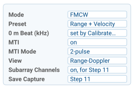
The preset is the lab’s waveform: 300 µs chirps of 500 MHz, one every 0.5 ms, at 9.9 GHz, and 256 chirps a frame, 128 ms. Your Part 1 predictions use it.
Connect the transmit antenna. With the kit powered off, connect the transmit antenna to OUT2. Connecting it with the kit on can damage the output stage.
Load the preset. Power the kit, open the Phaser app, select FMCW, and set Preset to Range + Velocity.
Calibrate 0 m. Set the 0 m frequency for this preset with Calibrate…, as in the L28 Lab, so that 0 m Beat (kHz) holds your kit’s value.
Show the view. Turn MTI on with MTI Mode at 2-pulse, open the Range-Doppler view, and press Start. The canceller removes everything that stands still, so the room drops out and only what moves stays. The FMCW mode holds the beam at broadside, 0°. The readouts give the Peak Range and Peak Velocity of the view’s strongest cell.
Four Targets
Fan at 1 m, spinner at 0.5 m, hand at 0.8 m; then walk toward the kit.
Read the largest speed on each side of 0 m/s.
Note whether the band is centered, and compare each with your prediction.
For each target, watch the Range-Doppler view for a few seconds and read, from the velocity axis, the largest speed its band reaches on each side of 0 m/s, positive closing, and whether the band is centered on 0 m/s. Compare each reading with your Part 1 prediction before you move on. A rotor shows micro-Doppler only where its parts move along the line of sight, so hold the fan and the spinner edge-on, the plane they turn in pointing at the array. Stand to the side while you read a rotor: your own breathing and fidgeting move too.
Fan. Set a fan with a guard about 1 m in front of the kit, edge-on, on a setting whose speed you know, and keep your fingers clear of it. Read it. Then turn it about 45° off edge-on and watch the band narrow, and face-on, where it nearly disappears: that is the check that your reading was edge-on.
Spinner. Spin the fidget spinner and hold it edge-on about 0.5 m out, steady. Read it while it is fresh.
Hand. Wave your hand toward and away from the kit, about 0.2 m each way, about 1.5 times a second, 0.8 m out. Read it.
Walker. Set the laptop beside the kit, its screen toward you, and walk straight toward the kit from 4 m at a normal pace, watching the view as you come. Read the largest speed on each side of 0 m/s.
A Crossing Walker
Tape A and B; measure each one’s range and angle.
Walk A to B to A; read near A both ways and at the turn.
Sway on B; save one burst with both channels.
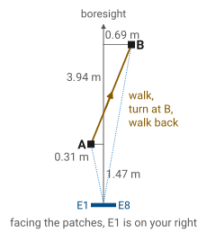
You need about 4.5 m of clear floor in front of the kit and a lane no one else walks through, because anyone moving in the beam shows up in the view as a second walker. Put the array at the origin: \(y\) straight out from it, \(x\) to the side, positive on the E8 side. Facing the patches, E1 is on your right.
Tape the marks. Tape mark A 1.47 m straight out from the array and 0.31 m to the E1 side, and mark B 3.94 m out and 0.69 m to the E8 side. Measure each mark’s range and angle from the array’s center and compare them with your prediction.
Walk it. With MTI on, walk from A to B at about 1 m/s, turn at B, and walk back to A. Read the walker’s range and velocity just after A, at B, and just before A on the way back, and compare them with your predictions. At B, read the torso line, not a limb’s. Walking out, your back is to the screen, so have a partner read the view, or start a screen recording on the laptop, walk, and read the three moments from the recording afterward. If your ranges at A and B are both off by the same amount, the 0 m frequency is off: calibrate again (Step 3).
Save a burst on B. Stand on mark B and sway, shifting your weight toward and away from the kit, because the canceller removes a person who stands still. Turn Subarray Channels on and press Save Capture. The app downloads one burst with both channels,
phaser_range_doppler_<date>-<time>.npz; rename itL31_sway_B.npzand keep it for Step 13.
Run the Notebook
Task (a): the window, 64, then 16, then 256 chirps.
Task (b): three features, then add the edge, then the shape.
Task (c): \(\alpha\) = 0.5, 0.2, 0.8, then your choice.
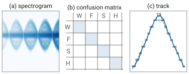
The notebook runs on your burst from Step 11 and on the course’s recorded
data, with or without a kit, in about 30 to 45 minutes. The notebook finds
each record’s target with the L30 chain, run on the record’s first burst, the
2-pulse canceller, the range-Doppler map, and cfar_2d, and its detection’s
range and velocity pick the range bins the spectrogram sums.
Set up the notebook. Download the lab’s bundle,
L31_lab.zip, and unzip it into a folder of its own in your Module 4 folder. It holds the notebook,L31_classify_track.ipynb; the providedradar_lab.py; every recorded file the notebook loads,L31_*.npz; and the data README. MoveL31_sway_B.npzinto the same folder. Python with numpy, scipy, matplotlib, and Jupyter is the setup from the L28 Lab’s Notebook Setup frame. Start Jupyter in the folder withjupyter lab, and open the notebook. Its first code cell names the files it loads,RECORDSandWALK; leave them as shipped.Run it to the angle at B. Run the cells in order from the top. In the angle cell, after Procedure B, set
B_REC = "L31_sway_B.npz"and run it. It prints your range and angle at B. Which side of broadside reads positive depends on the order of the kit’s channels, so compare the sign with your prediction; if it is reversed, the kit’s channels are the other way around, and you say so in the packet.Task (a), the window. Run the window cell with
N_WIN = 64, then 16, then 256. Each run prints the resolution and three widths; compare the walker’s torso line with your predicted resolution.Task (b), one more feature. Run the two classifier cells as they stand, and record the confusion matrix in Table D of the packet. Then add one line at the
TASK (b)mark ofmy_featuresto append the band’s edge in m/s,x = np.append(x, edge.mean() * lam / 2), and run both again; then change it to append the shape, the spread over that edge, and run both again. With the shape, average the fans’ fourth feature and the spinners’ from the printout, and compare with your prediction.Task (c), the track. Run the tracking cell with
ALPHA = 0.5, then 0.2, then 0.8, then the value you would use, which writesL31_track.csv. Each run prints the detections’ RMS error and the track’s, from the walk’s truth after the first second. The noise ratio is the track’s range RMS over the detections’; compare it with your predicted noise ratio, and the range error at the turn with your predicted settled lag.Save the notebook. Save it with its edits and plots, and upload the
.ipynbwith the packet.
No Hardware?
Note
The whole lab can be done without a kit, in the Phaser app’s browser simulator and the notebook. Open the simulator at livethisdream.github.io/phaser/radar, select FMCW, set Preset to Range + Velocity, turn MTI on at 2-pulse, and open the Range-Doppler view. Its Scene list has no fan or spinner, so Steps 5 to 10 use Load Capture, which plays one of the course’s recorded files through the same view as if it were live, looping. The files are in the lab’s bundle (Step 12). They come from a simulation of the PHASER at this preset; each target record is 2.0 s of chirps that keep 90 samples each, so the range bins are the same 0.30 m and the view ends at 4.1 m. Mark in the packet which rows come from recorded data.
Steps 5 to 8: load
L31_fan_1.npz,L31_spinner_1.npz,L31_hand_1.npz, andL31_walker_1.npzin turn, and read each. Each file’s note, printed by the notebook’s first code cell, gives the target’s size and rate. The notebook’s Procedure A cell prints the speeds from the same four files; check your readings against it.Steps 9 and 10: load
L31_dismount.npz, a person walking at 1 m/s from A to B, turning, and walking back, past a chair at 3.2 m. Its note gives A’s and B’s ranges and angles, which stand in for your tape. The file keeps every 4th chirp, so the view spans ±3.8 m/s and each update covers 0.5 s of walking, which blurs the range; the notebook’s Procedure B cell prints three 128 ms frames of it, near A going out, at the turn, and near A coming back, which fill Step 10’s boxes.Steps 11 and 13: skip the burst; in Step 13 run the angle cell as shipped, on
L31_dismount.npz. Its farthest frame is the turn at B.Steps 12 to 17 run on the bundle’s files with or without a kit.
Your Part 2 Entries
This frame collects every box you filled in on this page. Your entries stay in this browser only, saved as you type. Download my packet writes them into Part 2 of the blank packet and saves the PDF; do Parts 1 and 3 on paper or in the PDF viewer, and upload one PDF to Gradescope with the notebook. If you have already typed Part 1 into the packet PDF, use Fill my own copy and choose that file instead: your Part 1 is kept, and Part 2 is added to it. Either way the result is locked, so finish any typing in the PDF first. Type the three confusion matrices of Table D into the packet itself. Export entries saves a small backup file you can Import on another laptop or after clearing your browser. The boxes are optional: the blank packet is in the next frame, to fill on paper or in a PDF viewer instead.
Lab Packet
The L31 Lab packet is one submission for the whole lab, turned in complete after the lab and before you write the final report. It has three parts:
Part 1, Predict (before the lab): the shaded Predicted cells of Tables A to E.
Part 2, Measure (your readings and the notebook’s): the white Measured cells of the same tables.
Part 3, Analyze (after the lab): three open prompts about what you measured.
For Part 3
Part 3 asks you to analyze your own Part 2 readings against your own Part 1 predictions, in three prompts: your speeds and your window widths (Tables A and C); your three confusion matrices and the features behind them (Table D); and your track at each \(\alpha\), in range and in angle (Table E). Keep the notebook’s printouts beside you: the features of every record and the track’s errors are the evidence.
Looking Ahead
This is the last lab. The final project report explains, in your own words, the chain the L28 to L31 Labs built, from a capture to a classified, tracked target; its page lists what it asks for.